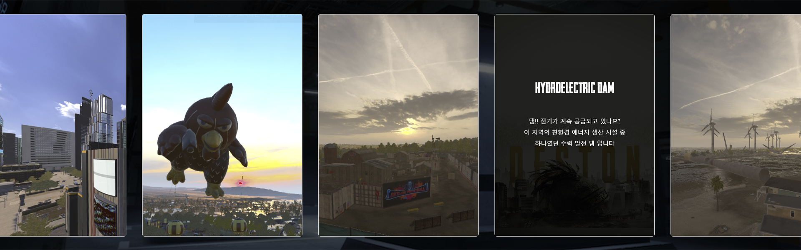
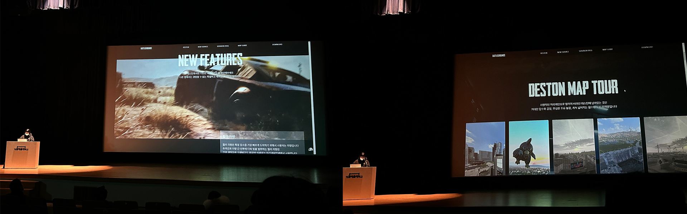
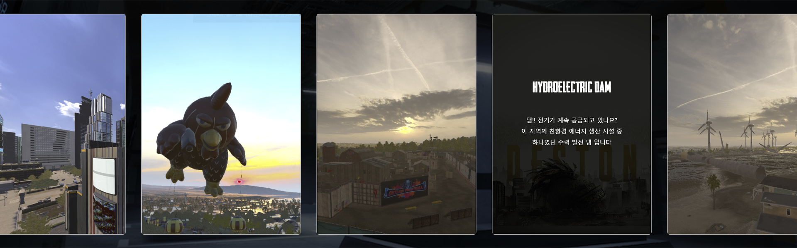
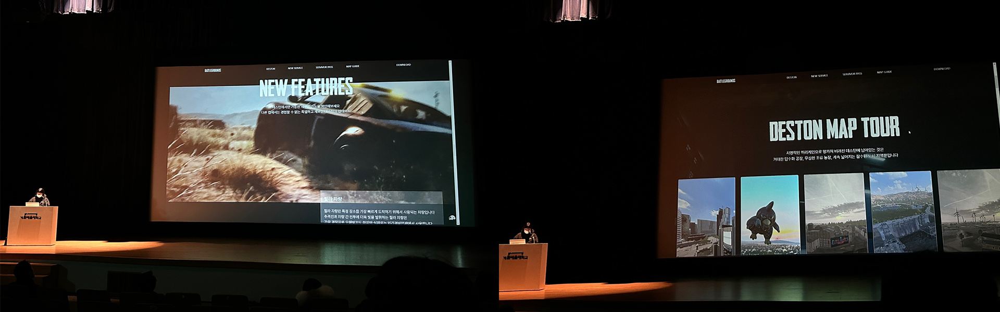
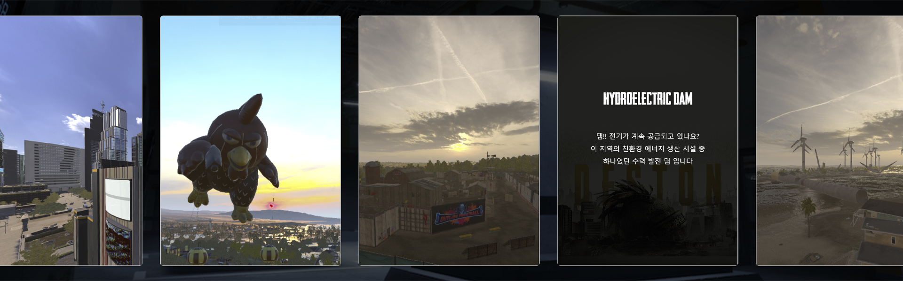
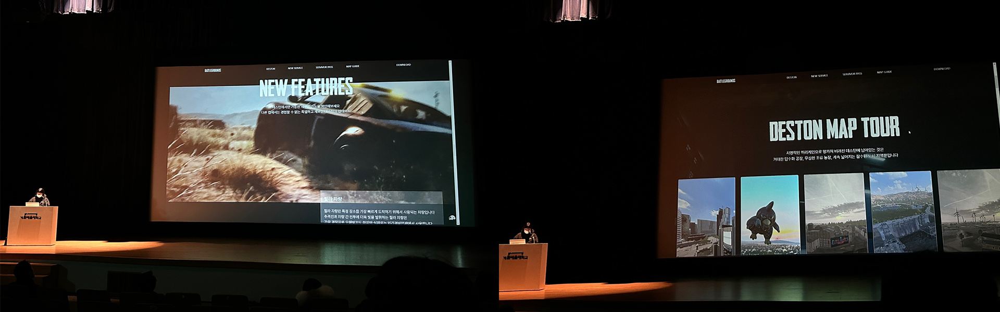
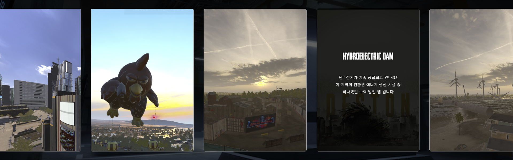
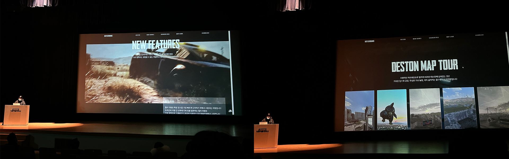

MAIN PAGE (ONE SCROLL)
전반적인 기획 / 디자인 / 프로그래밍
작업을 진행하였습니다.
HTML / CSS
JAVASCRIPT / JQUERY
PC
* 호스트 링크에 트래픽 문제가 발생하고있어 시연 영상을 함께 첨부합니다.

HTML 의 CANVAS 태그에 영상에서 추출한 프레임 이미지를 불러와
스크롤 할때마다 마치 영상이 움직이는 것 처럼 보이게 만든 인터렉션.
반복문을 통해 총 불러와야하는 이미지(TOTALIMAGESCOUNT) 만큼
반복하여 JACASCRIPT에서 불러와 스크롤 할때마다 로드된
총 이미지를 제어한다